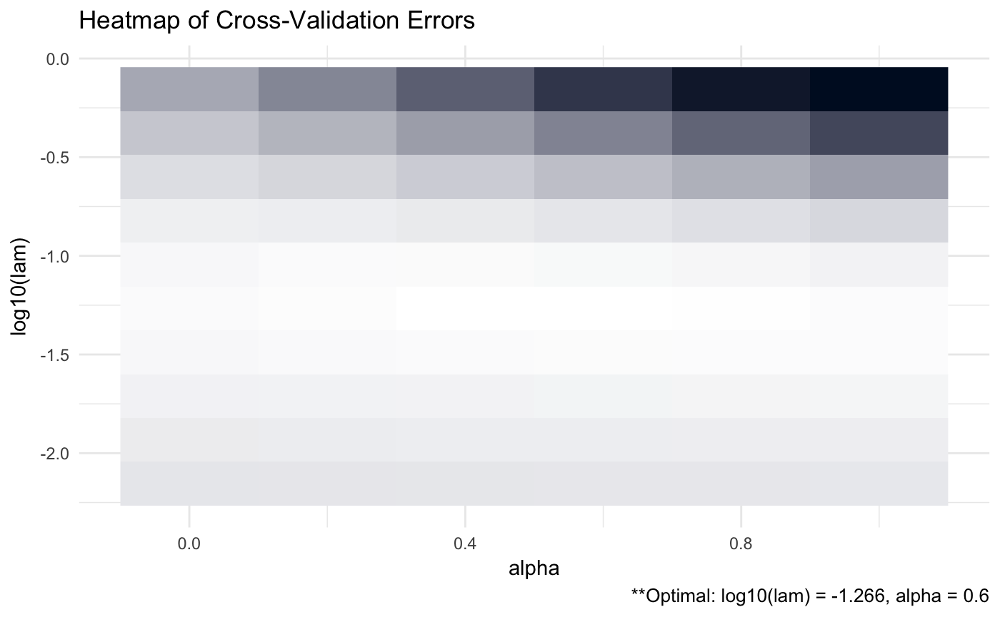
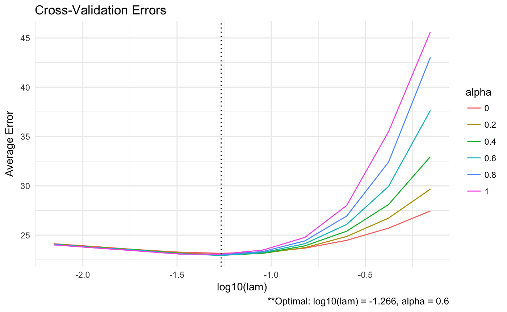
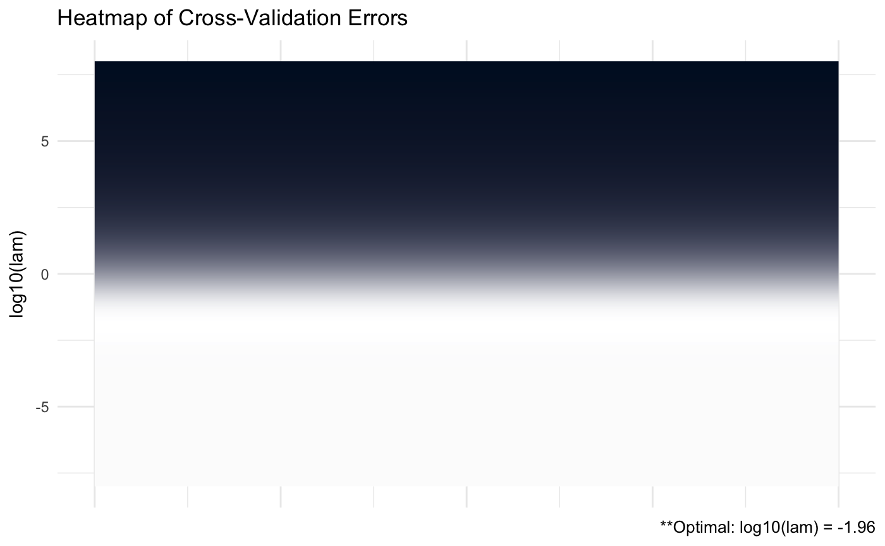

Regularized Precision Matrix Estimation via ADMM
Matt Galloway
Source:vignettes/ADMMsigma.Rmd
ADMMsigma.RmdAbstract
ADMMsigma is an R package that estimates a penalized precision matrix via the alternating direction method of multipliers (ADMM) algorithm. It currently supports a general elastic-net penalty that allows for both ridge and lasso-type penalties as special cases. This report will provide a brief overview of the algorithm, discuss the functions contained in ADMMsigma, and provide simulation results.
Introduction
Suppose we want to solve the following optimization problem:
\[\begin{align*} \mbox{minimize } f(x) + g(z) \\ \mbox{subject to } Ax + Bz = c \end{align*}\]where \(x \in \mathbb{R}^{n}, z \in \mathbb{R}^{m}, A \in \mathbb{R}^{p \times n}, B \in \mathbb{R}^{p \times m}\), and \(c \in \mathbb{R}^{p}\). Following Boyd et al. (2011), the optimization problem will be introduced in vector form though we will later consider cases where \(x\) and \(z\) are matrices. We will also assume \(f\) and \(g\) are convex functions. Optimization problems like this arise naturally in several statistics and machine learning applications – particularly regularization methods. For instance, we could take \(f\) to be the squared error loss, \(g\) to be the \(l_{2}\)-norm, \(c\) to be equal to zero and \(A\) and \(B\) to be identity matrices to solve the ridge regression optimization problem.
The augmented lagrangian is constructed as follows:
\[ L_{\rho}(x, z, y) = f(x) + g(z) + y^{T}(Ax + Bz - c) + \frac{\rho}{2}\left\| Ax + Bz - c \right\|_{2}^{2} \]
where \(y \in \mathbb{R}^{p}\) is the lagrange multiplier and \(\rho > 0\) is a scalar. Clearly any minimizer, \(p^{*}\), under the augmented lagrangian is equivalent to that of the lagrangian since any feasible point \((x, z)\) satisfies the constraint \(\rho\left\| Ax + Bz - c \right\|_{2}^{2}/2 = 0\).
\[ p^{*} = inf\left\{ f(x) + g(z) | Ax + Bz = c \right\} \]
The alternating direction method of multipliers (ADMM) algorithm consists of the following repeated iterations:
\[\begin{align} x^{k + 1} &:= \arg\min_{x}L_{\rho}(x, z^{k}, y^{k}) \\ z^{k + 1} &:= \arg\min_{z}L_{\rho}(x^{k + 1}, z, y^{k}) \\ y^{k + 1} &:= y^{k} + \rho(Ax^{k + 1} + Bz^{k + 1} - c) \end{align}\]A more complete introduction to the algorithm – specifically how it arose out of dual ascent and method of multipliers – can be found in Boyd et al. (2011).
Regularized Precision Matrix Estimation
Now consider the case where \(X_{1}, ..., X_{n}\) are iid \(N_{p}(\mu, \Sigma)\) random variables and we are tasked with estimating the precision matrix, denoted \(\Omega \equiv \Sigma^{-1}\). The maximum likelihood estimator for \(\Omega\) is
\[ \hat{\Omega}_{MLE} = \arg\min_{\Omega \in S_{+}^{p}}\left\{ Tr\left(S\Omega\right) - \log \det\left(\Omega \right) \right\} \]
where \(S = \sum_{i = 1}^{n}(X_{i} - \bar{X})(X_{i} - \bar{X})^{T}/n\) and \(\bar{X}\) is the sample mean. By setting the gradient equal to zero, we can show that when the solution exists, \(\hat{\Omega}_{MLE} = S^{-1}\).
As in regression settings, we can construct a penalized likelihood estimator by adding a penalty term, \(P\left( \Omega \right)\), to the likelihood:
\[ \hat{\Omega} = \arg\min_{\Omega \in S_{+}^{p}}\left\{ Tr\left(S\Omega\right) - \log \det\left(\Omega \right) + P\left( \Omega \right) \right\} \]
\(P\left( \Omega \right)\) is often of the form \(P\left(\Omega \right) = \lambda\|\Omega \|_{F}^{2}\) or \(P\left(\Omega \right) = \|\Omega\|_{1}\) where \(\lambda > 0\), \(\left\|\cdot \right\|_{F}^{2}\) is the Frobenius norm and we define \(\left\|A \right\|_{1} = \sum_{i, j} \left| A_{ij} \right|\). These penalties are the ridge and lasso, respectively. We will, instead, take \(P\left( \Omega \right) = \lambda\left[\frac{1 - \alpha}{2}\left\| \Omega \right|_{F}^{2} + \alpha\left\| \Omega \right\|_{1} \right]\) so that the full penalized likelihood is
\[ \hat{\Omega} = \arg\min_{\Omega \in S_{+}^{p}}\left\{ Tr\left(S\Omega\right) - \log \det\left(\Omega \right) + \lambda\left[\frac{1 - \alpha}{2}\left\| \Omega \right|_{F}^{2} + \alpha\left\| \Omega \right\|_{1} \right] \right\} \]
where \(0 \leq \alpha \leq 1\). This elastic-net penalty was explored by Hui Zou and Trevor Hastie (Zou and Hastie 2005) and is identical to the penalty used in the popular penalized regression package glmnet. Clearly, when \(\alpha = 0\) the elastic-net reduces to a ridge-type penalty and when \(\alpha = 1\) it reduces to a lasso-type penalty.
By letting \(f\) be equal to the non-penalized likelihood and \(g\) equal to \(P\left( \Omega \right)\), our goal is to minimize the full augmented lagrangian where the constraint is that \(\Omega - Z\) is equal to zero:
\[ L_{\rho}(\Omega, Z, \Lambda) = f\left(\Omega\right) + g\left(Z\right) + Tr\left[\Lambda\left(\Omega - Z\right)\right] + \frac{\rho}{2}\left\|\Omega - Z\right\|_{F}^{2} \]
The ADMM algorithm for estimating the penalized precision matrix in this problem is
\[\begin{align} \Omega^{k + 1} &= \arg\min_{\Omega}\left\{ Tr\left(S\Omega\right) - \log\det\left(\Omega\right) + Tr\left[\Lambda^{k}\left(\Omega - Z^{k}\right)\right] + \frac{\rho}{2}\left\| \Omega - Z^{k} \right\|_{F}^{2} \right\} \\ Z^{k + 1} &= \arg\min_{Z}\left\{ \lambda\left[ \frac{1 - \alpha}{2}\left\| Z \right\|_{F}^{2} + \alpha\left\| Z \right\|_{1} \right] + Tr\left[\Lambda^{k}\left(\Omega^{k + 1} - Z\right)\right] + \frac{\rho}{2}\left\| \Omega^{k + 1} - Z \right\|_{F}^{2} \right\} \\ \Lambda^{k + 1} &= \Lambda^{k} + \rho\left( \Omega^{k + 1} - Z^{k + 1} \right) \end{align}\]Scaled-Form ADMM
An alternate form of the ADMM algorithm can constructed by scaling the dual variable (\(\Lambda^{k}\)). Let us define \(R^{k} = \Omega - Z^{k}\) and \(U^{k} = \Lambda^{k}/\rho\).
\[\begin{align*} Tr\left[ \Lambda^{k}\left( \Omega - Z^{k} \right) \right] + \frac{\rho}{2}\left\| \Omega - Z^{k} \right\|_{F}^{2} &= Tr\left[ \Lambda^{k}R^{k} \right] + \frac{\rho}{2}\left\| R^{k} \right\|_{F}^{2} \\ &= \frac{\rho}{2}\left\| R^{k} + \Lambda^{k}/\rho \right\|_{F}^{2} - \frac{\rho}{2}\left\| \Lambda^{k}/\rho \right\|_{F}^{2} \\ &= \frac{\rho}{2}\left\| R^{k} + U^{k} \right\|_{F}^{2} - \frac{\rho}{2}\left\| U^{k} \right\|_{F}^{2} \end{align*}\]Therefore, the condensed-form ADMM algorithm can now be written as
\[\begin{align} \Omega^{k + 1} &= \arg\min_{\Omega}\left\{ Tr\left(S\Omega\right) - \log\det\left(\Omega\right) + \frac{\rho}{2}\left\| \Omega - Z^{k} + U^{k} \right\|_{F}^{2} \right\} \\ Z^{k + 1} &= \arg\min_{Z}\left\{ \lambda\left[ \frac{1 - \alpha}{2}\left\| Z \right\|_{F}^{2} + \alpha\left\| Z \right\|_{1} \right] + \frac{\rho}{2}\left\| \Omega^{k + 1} - Z + U^{k} \right\|_{F}^{2} \right\} \\ U^{k + 1} &= U^{k} + \Omega^{k + 1} - Z^{k + 1} \end{align}\]And more generally (in vector form),
\[\begin{align} x^{k + 1} &= \arg\min_{x}\left\{ f(x) + \frac{\rho}{2}\left\| Ax + Bz^{k} - c + u^{k} \right\|_{2}^{2} \right\} \\ z^{k + 1} &= \arg\min_{z}\left\{ g(z) + \frac{\rho}{2}\left\| Ax^{k + 1} + Bz - c + u^{k} \right\|_{2}^{2} \right\} \\ u^{k + 1} &= u^{k} + Ax^{k + 1} + Bz^{k + 1} - c \end{align}\]Note that there are limitations to using this method. Because the dual variable is scaled by \(\rho\) (the step size), this form limits one to using a constant step size without making further adjustments to \(U^{k}\). It has been shown in the literature that a dynamic step size can significantly reduce the number of iterations required for convergence.
Algorithm
\[\begin{align*} \Omega^{k + 1} &= \arg\min_{\Omega}\left\{ Tr\left(S\Omega\right) - \log\det\left(\Omega\right) + Tr\left[\Lambda^{k}\left(\Omega - Z^{k}\right)\right] + \frac{\rho}{2}\left\| \Omega - Z^{k} \right\|_{F}^{2} \right\} \\ Z^{k + 1} &= \arg\min_{Z}\left\{ \lambda\left[ \frac{1 - \alpha}{2}\left\| Z \right\|_{F}^{2} + \alpha\left\| Z \right\|_{1} \right] + Tr\left[\Lambda^{k}\left(\Omega^{k + 1} - Z\right)\right] + \frac{\rho}{2}\left\| \Omega^{k + 1} - Z \right\|_{F}^{2} \right\} \\ \Lambda^{k + 1} &= \Lambda^{k} + \rho\left( \Omega^{k + 1} - Z^{k + 1} \right) \end{align*}\]Initialize \(Z^{0}, \Lambda^{0}\), and \(\rho\). Iterate the following three steps until convergence:
- Decompose \(S + \Lambda^{k} - \rho Z^{k} = VQV^{T}\) via spectral decomposition.
\[ \Omega^{k + 1} = \frac{1}{2\rho}V\left[ -Q + \left( Q^{2} + 4\rho I_{p} \right)^{1/2} \right]V^{T} \]
- Elementwise soft-thresholding for all \(i = 1,..., p\) and \(j = 1,..., p\).
- Update \(\Lambda^{k + 1}\).
\[ \Lambda^{k + 1} = \Lambda^{k} + \rho\left( \Omega^{k + 1} - Z^{k + 1} \right) \]
Proof of (1):
\[ \Omega^{k + 1} = \arg\min_{\Omega}\left\{ Tr\left(S\Omega\right) - \log\det\left(\Omega\right) + Tr\left[\Lambda^{k}\left(\Omega - Z^{k}\right)\right] + \frac{\rho}{2}\left\| \Omega - Z^{k} \right\|_{F}^{2} \right\} \]
\[\begin{align*} \nabla_{\Omega}&\left\{ Tr\left(S\Omega\right) - \log\det\left(\Omega\right) + Tr\left[\Lambda^{k}\left(\Omega - Z^{k}\right)\right] + \frac{\rho}{2}\left\| \Omega - Z^{k} \right\|_{F}^{2} \right\} \\ &= S - \Omega^{-1} + \Lambda^{k} + \rho\left( \Omega - Z^{k} \right) \end{align*}\]Set the gradient equal to zero and decompose \(\Omega = VDV^{T}\) where \(D\) is a diagonal matrix with diagonal elements equal to the eigen values of \(\Omega\) and \(V\) is the matrix with corresponding eigen vectors as columns.
\[ S + \Lambda^{k} - \rho Z^{k} = \Omega^{-1} - \rho \Omega = VD^{-1}V^{T} - \rho VDV^{T} = V\left(D^{-1} - \rho D\right)V^{T} \]
This equivalence implies that
\[ \phi_{j}\left( S + \Lambda^{k} - \rho Z^{k} \right) = \frac{1}{\phi_{j}(\Omega^{k + 1})} - \rho\phi_{j}(\Omega^{k + 1}) \]
where \(\phi_{j}(\cdot)\) is the \(j\)th eigen value.
\[\begin{align*} &\Rightarrow \rho\phi_{j}^{2}(\Omega^{k + 1}) + \phi_{j}\left( S + \Lambda^{k} - \rho Z^{k} \right)\phi_{j}(\Omega^{k + 1}) - 1 = 0 \\ &\Rightarrow \phi_{j}(\Omega^{k + 1}) = \frac{-\phi_{j}(S + \Lambda^{k} - \rho Z^{k}) \pm \sqrt{\phi_{j}^{2}(S + \Lambda^{k} - \rho Z^{k}) + 4\rho}}{2\rho} \end{align*}\]In summary, if we decompose \(S + \Lambda^{k} - \rho Z^{k} = VQV^{T}\) then
\[ \Omega^{k + 1} = \frac{1}{2\rho}V\left[ -Q + (Q^{2} + 4\rho I_{p})^{1/2}\right] V^{T} \]
Proof of (2)
\[ Z^{k + 1} = \arg\min_{Z}\left\{ \lambda\left[ \frac{1 - \alpha}{2}\left\| Z \right\|_{F}^{2} + \alpha\left\| Z \right\|_{1} \right] + Tr\left[\Lambda^{k}\left(\Omega^{k + 1} - Z\right)\right] + \frac{\rho}{2}\left\| \Omega^{k + 1} - Z \right\|_{F}^{2} \right\} \]
\[\begin{align*} \partial&\left\{ \lambda\left[ \frac{1 - \alpha}{2}\left\| Z \right\|_{F}^{2} + \alpha\left\| Z \right\|_{1} \right] + Tr\left[\Lambda^{k}\left(\Omega^{k + 1} - Z\right)\right] + \frac{\rho}{2}\left\| \Omega^{k + 1} - Z \right\|_{F}^{2} \right\} \\ &= \partial\left\{ \lambda\left[ \frac{1 - \alpha}{2}\left\| Z \right\|_{F}^{2} + \alpha\left\| Z \right\|_{1} \right] + Tr\left[\Lambda^{k}\left(\Omega^{k + 1} - Z\right)\right]\right\} + \nabla_{\Omega}\left\{\frac{\rho}{2}\left\| \Omega^{k + 1} - Z \right\|_{F}^{2} \right\} \\ &= \lambda(1 - \alpha)Z + Sign(Z)\lambda\alpha - \Lambda^{k} - \rho\left( \Omega^{k + 1} - Z \right) \end{align*}\]where \(Sign(Z)\) is the elementwise Sign operator. By setting the gradient/sub-differential equal to zero, we arrive at the following equivalence:
\[ Z_{ij} = \frac{1}{\lambda(1 - \alpha) + \rho}\left( \rho \Omega_{ij}^{k + 1} + \Lambda_{ij}^{k} - Sign(Z_{ij})\lambda\alpha \right) \]
for all \(i = 1,..., p\) and \(j = 1,..., p\). We observe two scenarios:
- If \(Z_{ij} > 0\) then
\[ \rho\Omega_{ij}^{k + 1} + \Lambda_{ij}^{k} > \lambda\alpha \]
- If \(Z_{ij} < 0\) then
\[ \rho\Omega_{ij}^{k + 1} + \Lambda_{ij}^{k} < -\lambda\alpha \]
This implies that \(Sign(Z_{ij}) = Sign(\rho\Omega_{ij}^{k + 1} + \Lambda_{ij}^{k})\). Putting all the pieces together, we arrive at
\[\begin{align*} Z_{ij}^{k + 1} &= \frac{1}{\lambda(1 - \alpha) + \rho}Sign\left(\rho\Omega_{ij}^{k + 1} + \Lambda_{ij}^{k}\right)\left( \left| \rho\Omega_{ij}^{k + 1} + \Lambda_{ij}^{k} \right| - \lambda\alpha \right)_{+} \\ &= \frac{1}{\lambda(1 - \alpha) + \rho}Soft\left(\rho\Omega_{ij}^{k + 1} + \Lambda_{ij}^{k}, \lambda\alpha\right) \end{align*}\]where \(Soft\) is the soft-thresholding function.
ADMMsigma R Package
Installation
# The easiest way to install is from CRAN
install.packages("ADMMsigma")
# You can also install the development
# version from GitHub:
# install.packages('devtools')
devtools::install_github("MGallow/ADMMsigma")If there are any issues/bugs, please let me know: github. You can also contact me via my website. Pull requests are welcome!
A (possibly incomplete) list of functions contained in the package can be found below:
ADMMsigma()computes the estimated precision matrix (ridge, lasso, and elastic-net type regularization optional)RIDGEsigma()computes the estimated ridge penalized precision matrix via closed-form solutionplot.ADMMsigma()produces a heat map or line graph for cross validation errorsplot.RIDGEsigma()produces a heat map or line graph for cross validation errors
Usage
We will first generate data from a sparse, tri-diagonal precision matrix and denote it as Omega.
library(ADMMsigma)
# generate data from a sparse matrix
# first compute covariance matrix
S = matrix(0.7, nrow = 5, ncol = 5)
for (i in 1:5) {
for (j in 1:5) {
S[i, j] = S[i, j]^abs(i - j)
}
}
# print oracle precision matrix
# (shrinkage might be useful)
(Omega = qr.solve(S) %>% round(3))## [,1] [,2] [,3] [,4] [,5]
## [1,] 1.961 -1.373 0.000 0.000 0.000
## [2,] -1.373 2.922 -1.373 0.000 0.000
## [3,] 0.000 -1.373 2.922 -1.373 0.000
## [4,] 0.000 0.000 -1.373 2.922 -1.373
## [5,] 0.000 0.000 0.000 -1.373 1.961# generate 1000 x 5 matrix with rows
# drawn from iid N_p(0, S)
Z = matrix(rnorm(100 * 5), nrow = 100, ncol = 5)
out = eigen(S, symmetric = TRUE)
S.sqrt = out$vectors %*% diag(out$values^0.5) %*%
t(out$vectors)
X = Z %*% S.sqrt
# snap shot of data
head(X)## [,1] [,2] [,3] [,4] [,5]
## [1,] -0.5717795 0.4033083 0.4862421 -0.3730276 -0.6997268
## [2,] 0.1677901 -0.7857414 -0.5949253 -1.0237384 -1.1056246
## [3,] 0.8291701 0.6128357 0.2038505 1.8371358 1.5902374
## [4,] -0.5383905 -0.5632869 -0.1762810 -1.6762049 -1.4923724
## [5,] 0.2280512 0.7799799 -0.2662428 0.1771806 0.0605152
## [6,] -1.2244974 1.2247869 0.8376686 1.7796413 0.2560312As described earlier in the report, the maximum likelihood estimator (MLE) for Omega is the inverse of the sample precision matrix \(S^{-1} = \left[\sum_{i = 1}^{n}(X_{i} - \bar{X})(X_{i} - \bar{X})^{T}/n \right]^{-1}\):
# print inverse of sample precision
# matrix (perhaps a bad estimate)
(qr.solve(cov(X) * (nrow(X) - 1)/nrow(X)) %>%
round(5))## [,1] [,2] [,3] [,4] [,5]
## [1,] 1.95121 -1.19264 -0.15640 0.09491 0.00569
## [2,] -1.19264 2.85274 -1.45104 -0.13297 -0.31207
## [3,] -0.15640 -1.45104 3.03918 -1.23656 0.22236
## [4,] 0.09491 -0.13297 -1.23656 2.98569 -1.40361
## [5,] 0.00569 -0.31207 0.22236 -1.40361 2.14536However, because Omega (known as the oracle) is sparse, a shrinkage estimator will perhaps perform better than the sample estimator. Below we construct various penalized estimators:
# elastic-net type penalty (set tolerance
# to 1e-8)
ADMMsigma(X, tol.abs = 1e-08, tol.rel = 1e-08)##
## Call: ADMMsigma(X = X, tol.abs = 1e-08, tol.rel = 1e-08)
##
## Iterations: 138
##
## Tuning parameters:
## log10(lam) alpha
## [1,] -1.488 1
##
## Log-likelihood: -119.58797
##
## Omega:
## [,1] [,2] [,3] [,4] [,5]
## [1,] 1.80700 -1.02227 -0.12600 0.00000 0.00000
## [2,] -1.02227 2.48516 -1.22929 -0.16928 -0.19100
## [3,] -0.12600 -1.22929 2.66227 -0.92954 0.00000
## [4,] 0.00000 -0.16928 -0.92954 2.57136 -1.13333
## [5,] 0.00000 -0.19100 0.00000 -1.13333 1.95680LASSO:
# lasso penalty (default tolerance)
ADMMsigma(X, alpha = 1)##
## Call: ADMMsigma(X = X, alpha = 1)
##
## Iterations: 58
##
## Tuning parameters:
## log10(lam) alpha
## [1,] -1.488 1
##
## Log-likelihood: -119.58827
##
## Omega:
## [,1] [,2] [,3] [,4] [,5]
## [1,] 1.80643 -1.02087 -0.12712 0.00000 0.00000
## [2,] -1.02087 2.48166 -1.22585 -0.17014 -0.19098
## [3,] -0.12712 -1.22585 2.65821 -0.92813 0.00000
## [4,] 0.00000 -0.17014 -0.92813 2.57036 -1.13293
## [5,] 0.00000 -0.19098 0.00000 -1.13293 1.95640ELASTIC-NET:
# elastic-net penalty (alpha = 0.5)
ADMMsigma(X, alpha = 0.5)##
## Call: ADMMsigma(X = X, alpha = 0.5)
##
## Iterations: 53
##
## Tuning parameters:
## log10(lam) alpha
## [1,] -1.488 0.5
##
## Log-likelihood: -115.58376
##
## Omega:
## [,1] [,2] [,3] [,4] [,5]
## [1,] 1.81542 -0.98934 -0.18509 0.00000 0.00000
## [2,] -0.98934 2.44846 -1.16278 -0.20981 -0.20880
## [3,] -0.18509 -1.16278 2.62731 -0.90777 0.00000
## [4,] 0.00000 -0.20981 -0.90777 2.56993 -1.11260
## [5,] 0.00000 -0.20880 0.00000 -1.11260 1.95245RIDGE:
# ridge penalty
ADMMsigma(X, alpha = 0)##
## Call: ADMMsigma(X = X, alpha = 0)
##
## Iterations: 52
##
## Tuning parameters:
## log10(lam) alpha
## [1,] -1.488 0
##
## Log-likelihood: -111.3675
##
## Omega:
## [,1] [,2] [,3] [,4] [,5]
## [1,] 1.82759 -0.97994 -0.25647 0.05735 0.00174
## [2,] -0.97994 2.44836 -1.10788 -0.27060 -0.22860
## [3,] -0.25647 -1.10788 2.62286 -0.90212 -0.00038
## [4,] 0.05735 -0.27060 -0.90212 2.57285 -1.09492
## [5,] 0.00174 -0.22860 -0.00038 -1.09492 1.95196# ridge penalty no ADMM
RIDGEsigma(X, lam = 10^seq(-8, 8, 0.01))##
## Call: RIDGEsigma(X = X, lam = 10^seq(-8, 8, 0.01))
##
## Tuning parameter:
## log10(lam) lam
## [1,] -2.07 0.009
##
## Log-likelihood: -119.52862
##
## Omega:
## [,1] [,2] [,3] [,4] [,5]
## [1,] 1.83290 -1.03852 -0.20259 0.07235 -0.00053
## [2,] -1.03852 2.51828 -1.19089 -0.20169 -0.25426
## [3,] -0.20259 -1.19089 2.66369 -0.98993 0.09296
## [4,] 0.07235 -0.20169 -0.98993 2.62894 -1.18140
## [5,] -0.00053 -0.25426 0.09296 -1.18140 1.97550This package also has the capability to provide heat maps for the cross validation errors. The more bright (white) areas of the heat map pertain to more optimal tuning parameters.
# produce CV heat map for ADMMsigma
ADMM = ADMMsigma(X, tol.abs = 1e-08, tol.rel = 1e-08)
ADMM %>% plot(type = "heatmap")
# produce line graph for CV errors for
# ADMMsigma
ADMM %>% plot(type = "line")
# produce CV heat map for RIDGEsigma
RIDGE = RIDGEsigma(X, lam = 10^seq(-8, 8,
0.01))
RIDGE %>% plot(type = "heatmap")
# produce line graph for CV errors for
# RIDGEsigma
RIDGE %>% plot(type = "line")
Simulations
In the simulations below we generated data from a number of oracle precision matrices with various structures. For each data-generating procedure, the ADMMsigma() function was run using 5-fold cross validation. After 20 replications, the cross validation errors were totalled and the optimal tuning parameters were selected (results in the top figure). These results are compared with the Kullback Leibler (KL) losses between the estimates and the oracle precision matrix (bottom figure). We can see below that our cross validation procedure choosing tuning parameters close to the optimal parameters.
Compound Symmetric: P = 100, N = 50

# oracle precision matrix
Omega = matrix(0.9, ncol = 100, nrow = 100)
diag(Omega = 1)
# generate covariance matrix
S = qr.solve(Omega)
# generate data
Z = matrix(rnorm(100 * 50), nrow = 50, ncol = 100)
out = eigen(S, symmetric = TRUE)
S.sqrt = out$vectors %*% diag(out$values^0.5) %*%
t(out$vectors)
X = Z %*% S.sqrtCompound Symmetric: P = 10, N = 1000

# oracle precision matrix
Omega = matrix(0.9, ncol = 10, nrow = 10)
diag(Omega = 1)
# generate covariance matrix
S = qr.solve(Omega)
# generate data
Z = matrix(rnorm(10 * 1000), nrow = 1000,
ncol = 10)
out = eigen(S, symmetric = TRUE)
S.sqrt = out$vectors %*% diag(out$values^0.5) %*%
t(out$vectors)
X = Z %*% S.sqrtDense: P = 100, N = 50

# generate eigen values
eigen = c(rep(1000, 5, rep(1, 100 - 5)))
# randomly generate orthogonal basis (via QR)
Q = matrix(rnorm(100*100), nrow = 100, ncol = 100) %>% qr %>% qr.Q
# generate covariance matrix
S = Q %*% diag(eigen) %*% t(Q)
# generate data
Z = matrix(rnorm(100*50), nrow = 50, ncol = 100)
out = eigen(S, symmetric = TRUE)
S.sqrt = out$vectors %*% diag(out$values^0.5) %*% t(out$vectors)
X = Z %*% S.sqrtDense: P = 10, N = 50

# generate eigen values
eigen = c(rep(1000, 5, rep(1, 10 - 5)))
# randomly generate orthogonal basis (via QR)
Q = matrix(rnorm(10*10), nrow = 10, ncol = 10) %>% qr %>% qr.Q
# generate covariance matrix
S = Q %*% diag(eigen) %*% t(Q)
# generate data
Z = matrix(rnorm(10*50), nrow = 50, ncol = 10)
out = eigen(S, symmetric = TRUE)
S.sqrt = out$vectors %*% diag(out$values^0.5) %*% t(out$vectors)
X = Z %*% S.sqrtTridiagonal: P = 100, N = 50

# generate covariance matrix
# (can confirm inverse is tri-diagonal)
S = matrix(0, nrow = 100, ncol = 100)
for (i in 1:100){
for (j in 1:100){
S[i, j] = 0.7^abs(i - j)
}
}
# generate data
Z = matrix(rnorm(10*50), nrow = 50, ncol = 10)
out = eigen(S, symmetric = TRUE)
S.sqrt = out$vectors %*% diag(out$values^0.5) %*% t(out$vectors)
X = Z %*% S.sqrtBenchmark
Below we benchmark the various functions contained in ADMMsigma. We can see that ADMMsigma (at the default tolerance) offers comparable computation time to the popular glasso R package.
Computer Specs:
- MacBook Pro (Late 2016)
- Processor: 2.9 GHz Intel Core i5
- Memory: 8GB 2133 MHz
- Graphics: Intel Iris Graphics 550
# generate data from tri-diagonal
# (sparse) matrix compute covariance
# matrix (can confirm inverse is
# tri-diagonal)
S = matrix(0, nrow = 100, ncol = 100)
for (i in 1:100) {
for (j in 1:100) {
S[i, j] = 0.7^(abs(i - j))
}
}
# generate 1000 x 100 matrix with rows
# drawn from iid N_p(0, S)
Z = matrix(rnorm(1000 * 100), nrow = 1000,
ncol = 100)
out = eigen(S, symmetric = TRUE)
S.sqrt = out$vectors %*% diag(out$values^0.5) %*%
t(out$vectors)
X = Z %*% S.sqrt
# glasso (for comparison)
microbenchmark(glasso(s = S, rho = 0.1))## Unit: milliseconds
## expr min lq mean median uq
## glasso(s = S, rho = 0.1) 49.46797 50.74574 56.76098 54.42407 59.07784
## max neval
## 110.3757 100# benchmark ADMMsigma - default tolerance
microbenchmark(ADMMsigma(S = S, lam = 0.1,
alpha = 1, tol.abs = 1e-04, tol.rel = 1e-04,
trace = "none"))## Unit: milliseconds
## expr
## ADMMsigma(S = S, lam = 0.1, alpha = 1, tol.abs = 1e-04, tol.rel = 1e-04, trace = "none")
## min lq mean median uq max neval
## 77.4879 82.67174 87.78936 83.93841 90.41592 137.8903 100# benchmark ADMMsigma - tolerance 1e-8
microbenchmark(ADMMsigma(S = S, lam = 0.1,
alpha = 1, tol.abs = 1e-08, tol.rel = 1e-08,
trace = "none"))## Unit: milliseconds
## expr
## ADMMsigma(S = S, lam = 0.1, alpha = 1, tol.abs = 1e-08, tol.rel = 1e-08, trace = "none")
## min lq mean median uq max neval
## 259.0316 262.03 267.4623 264.1617 269.9908 294.6981 100# benchmark ADMMsigma CV - default
# parameter grid
microbenchmark(ADMMsigma(X, trace = "none"),
times = 5)## Unit: seconds
## expr min lq mean median uq
## ADMMsigma(X, trace = "none") 8.126711 8.132864 8.176253 8.151159 8.234739
## max neval
## 8.23579 5# benchmark ADMMsigma parallel CV
microbenchmark(ADMMsigma(X, cores = 3, trace = "none"),
times = 5)## Unit: seconds
## expr min lq mean
## ADMMsigma(X, cores = 3, trace = "none") 5.66771 5.748002 5.973448
## median uq max neval
## 5.989402 6.159302 6.302825 5# benchmark ADMMsigma CV - likelihood
# convergence criteria
microbenchmark(ADMMsigma(X, crit = "loglik",
trace = "none"), times = 5)## Unit: seconds
## expr min lq mean
## ADMMsigma(X, crit = "loglik", trace = "none") 7.020905 7.088597 7.087975
## median uq max neval
## 7.089398 7.101995 7.138978 5# benchmark RIDGEsigma CV
microbenchmark(RIDGEsigma(X, lam = 10^seq(-8,
8, 0.01), trace = "none"), times = 5)## Unit: seconds
## expr min
## RIDGEsigma(X, lam = 10^seq(-8, 8, 0.01), trace = "none") 12.03564
## lq mean median uq max neval
## 12.08566 12.18355 12.23003 12.25194 12.31448 5References
Boyd, Stephen, Neal Parikh, Eric Chu, Borja Peleato, Jonathan Eckstein, and others. 2011. “Distributed Optimization and Statistical Learning via the Alternating Direction Method of Multipliers.” Foundations and Trends in Machine Learning 3 (1). Now Publishers, Inc.: 1–122.
Zou, Hui, and Trevor Hastie. 2005. “Regularization and Variable Selection via the Elastic Net.” Journal of the Royal Statistical Society: Series B (Statistical Methodology) 67 (2). Wiley Online Library: 301–20.